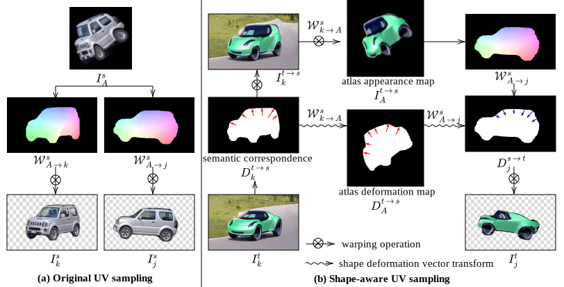

Shape-aware Text-driven Layered Video Editing
University of Maryland, College Park
CVPR 2023
Interactive video demo
Slide the bar to compare input (left) and output (right)
Input video
Foreground
Background
University of Maryland, College Park
Slide the bar to compare input (left) and output (right)
Input video
Foreground
Background
Temporal consistency is essential for video editing applications. Existing work on layered representation of videos allows propagating edits consistently to each frame. These methods, however, can only edit object appearance rather than object shape changes due to the limitation of using a fixed UV mapping field for texture atlas. We present a shape-aware, text-driven video editing method to tackle this challenge. To handle shape changes in video editing, we first propagate the deformation field between the input and edited keyframe to all frames. We then leverage a pre-trained text-conditioned diffusion model as guidance for refining shape distortion and completing unseen regions. The experimental results demonstrate that our method can achieve shape-aware consistent video editing and compare favorably with the state-of-the-art.
Our method first bases on a pre-trained NLA to decompose the video into unified atlases with the associated per-frame UV mapping. The dense semantic correspondence between the input and edited keyframe serves as the bridge between input and output videos for per-frame deformation through the UV mapping and atlas.

Our deformation module maps the edits back to the atlas via the original UV map by using the semantic correspondence of the keyframe. The per-pixel deformation vectors are transformed into the atlas space with the same UV mapping field. Consequently, the UV map samples the color and the deformation vectors onto each frame to deform the original UV map respecting the edited shape.
Ours
.
Example
Compared method
By linearly interpolating the deformation maps, the object shape can be easily interpolated without additional frame interpolation methods.
Example
@article{lee2023textvideoedit,
title = {Shape-aware Text-driven Layered Video Editing Demo},
author = {Lee, Yao-Chih and Jang, Ji-Ze Genevieve Jang and Chen, Yi-Ting and Qiu, Elizabeth and Huang, Jia-Bin},
journal = {arXiv preprint arXiv:2301.13173},
year = {2023}
}